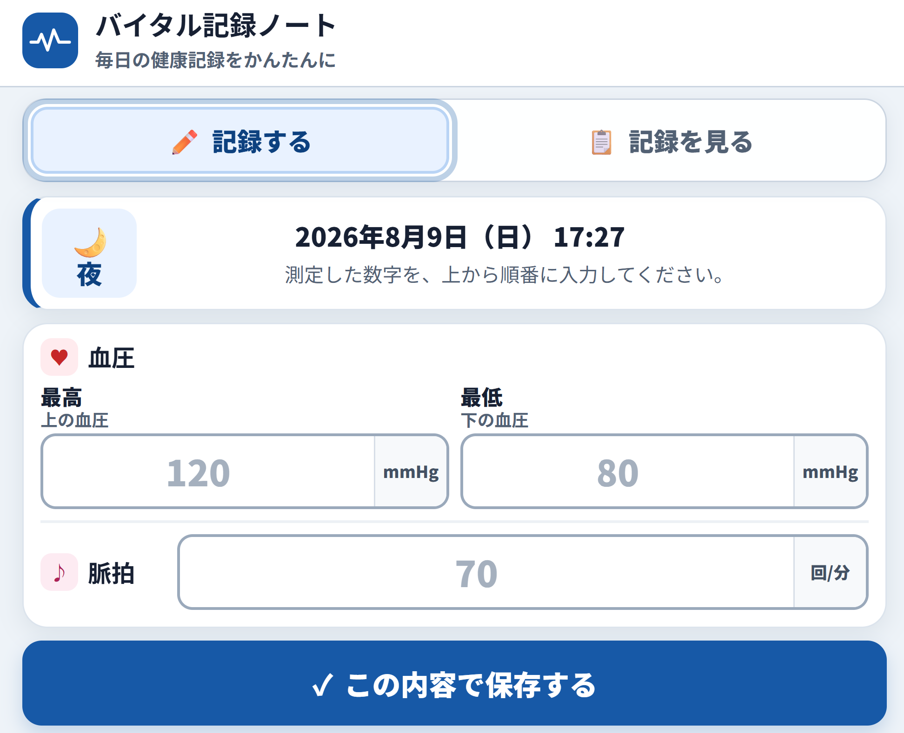
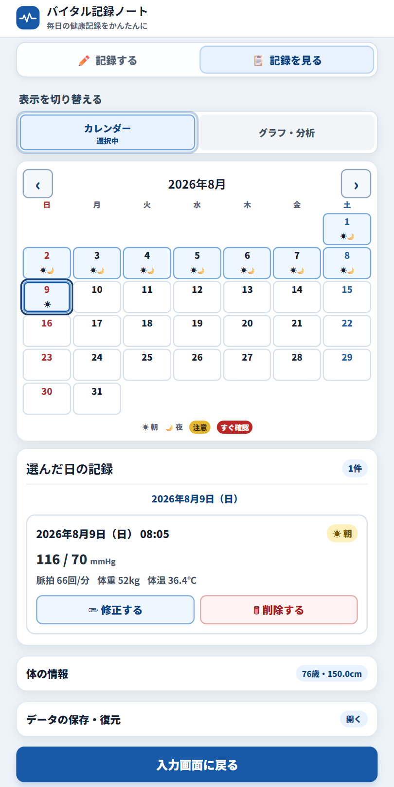
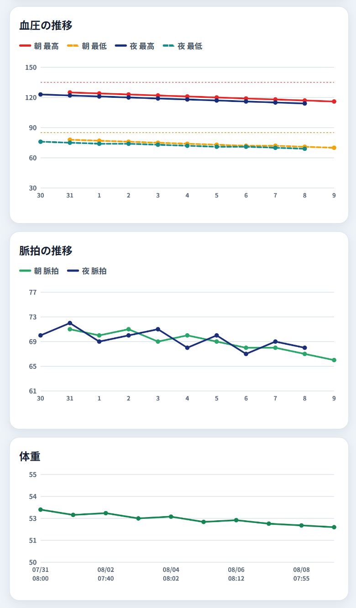

Works / バイタル記録ノート
Work
バイタル記録ノート
血圧・脈拍・体重・体温をスマートフォンで記録し、履歴を振り返るための軽量Webアプリです。
毎日続けやすいよう、「記録する」と「見る」の画面をシンプルに分けています。



上の3画面は、制作時点の画面イメージです。アプリ更新により、実際の表示と異なる場合があります。
画像をクリックすると拡大できます（＋／−、または Ctrl＋ホイールでズーム。Macは Command）。
サンプルデータ
架空のデモ用CSVです。アプリの「CSVから戻す」からインポートすると、記録・カレンダー・グラフの動作確認ができます。
課題
- 記録のしづらさ 紙だと字が読みにくく、あとから数値を追いづらい。
- きっかけ 手描きの推移では変化が伝わりにくく、母から印刷して医師に見せられるようにしてほしいと言われた。
- 目指したこと スマホで入力し、期間のまとめやチャート、PDFで状態を分かりやすく確認できるようにする。
工夫した点
- 「記録する／見る」の2画面に絞り、操作を単純にする
- スマホ表示を前提に、文字を大きめ・余白広め・ボタンを押しやすくし、高齢の方でも入力しやすいレイアウトにする
- Chromeで開いて、スマートフォンにアプリとしてインストールできるようにする（PWA）
- CSVでバックアップ／復元できるほか、必要なときはバックアップ画面から全記録を削除できる（デモ用CSVで動作確認可）
- 選択した期間のまとめ・グラフ・測定一覧をPDFとして保存・印刷できる
- 入力した数値から注意・確認の目安を表示し、必要に応じて受診を検討するよう促す
使ってみる
- 試す 上のURLをChromeで開き、必要ならスマートフォンにインストールして動作を確認できます。
- リセットする 確認が終わったら、バックアップ画面から記録を削除できます。
- 自分用に使う そのあと、自分や家族の記録用として使い始められます。
同種のアプリ制作やご相談があれば、 Contact からお気軽にご連絡ください。